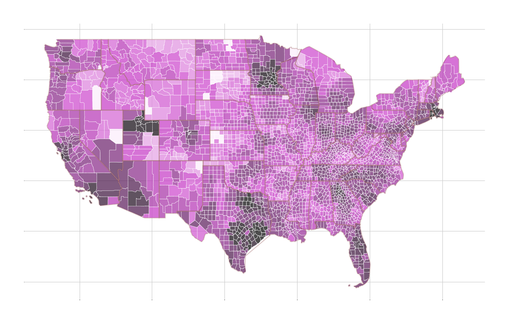
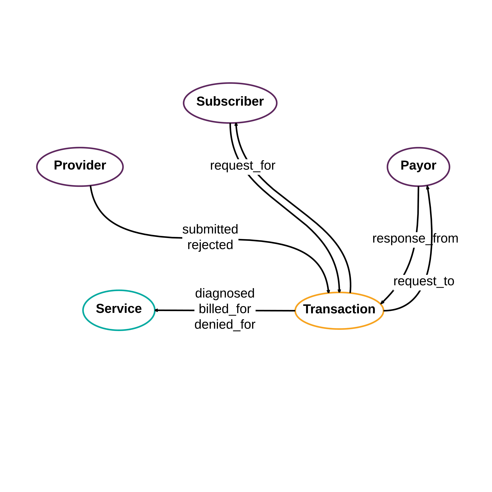
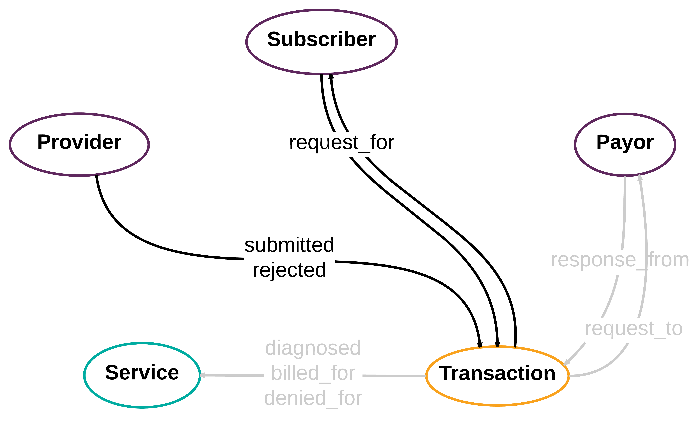
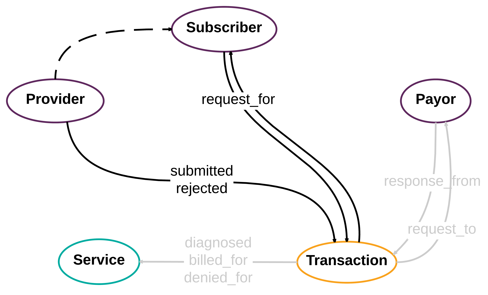
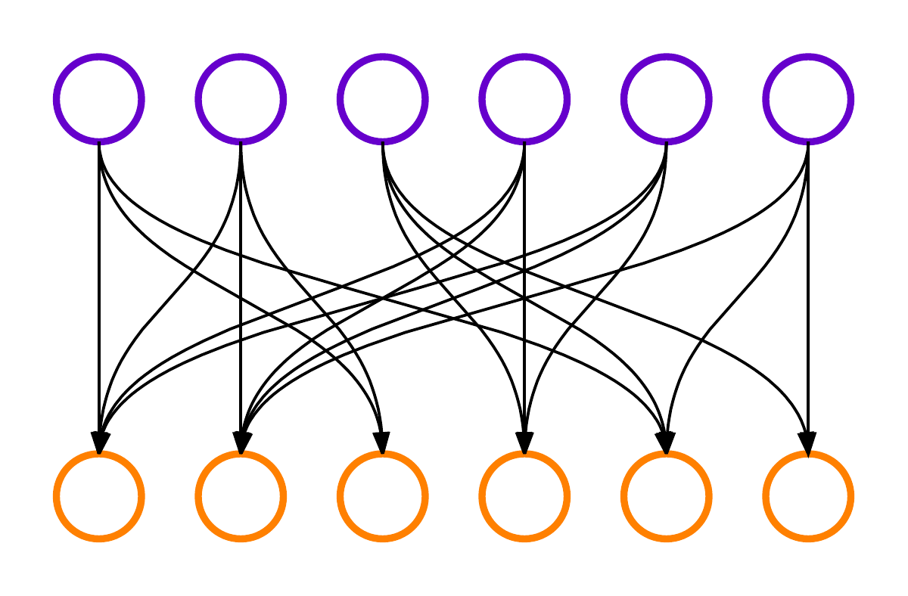
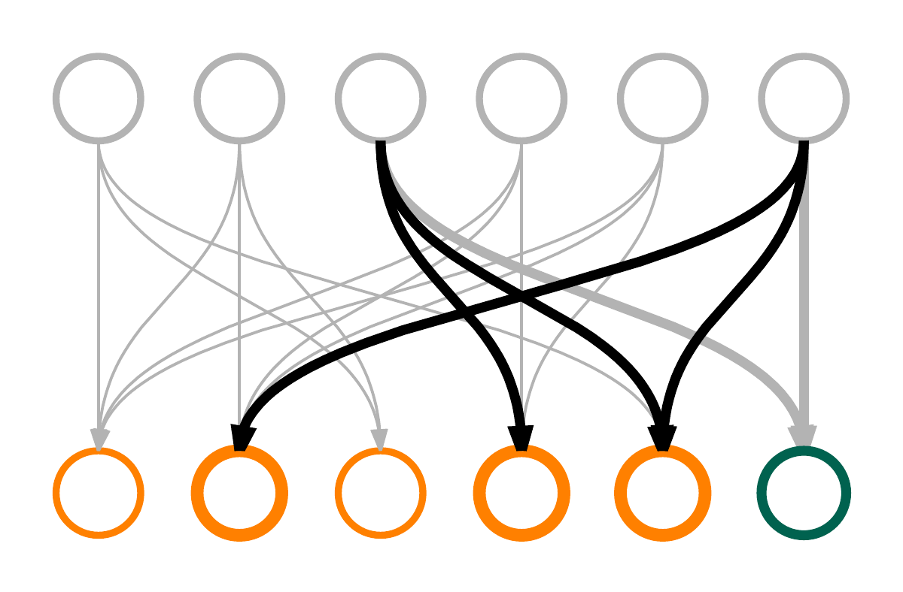
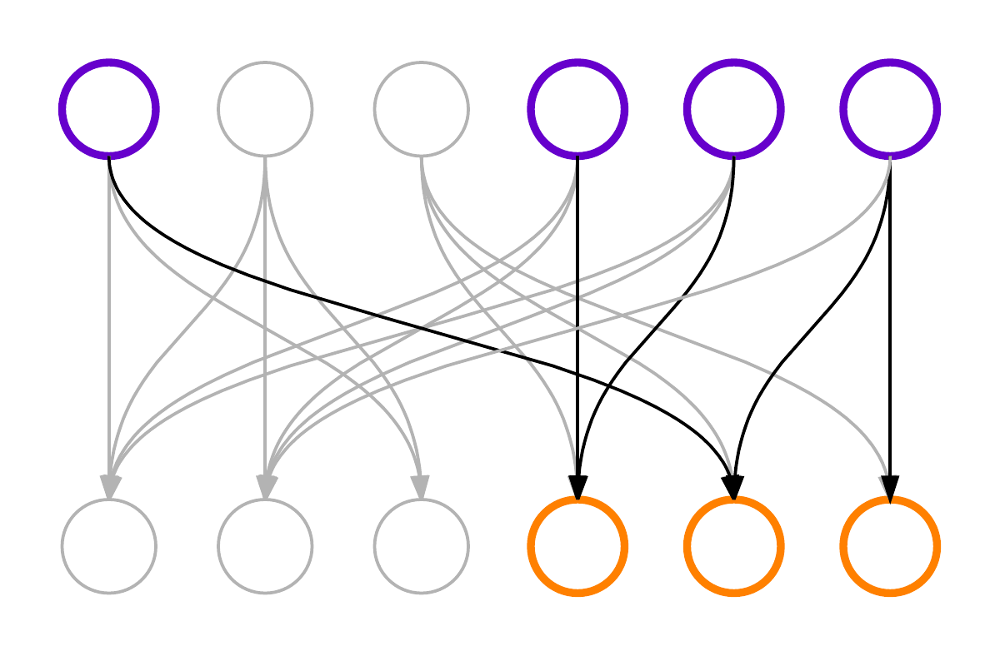
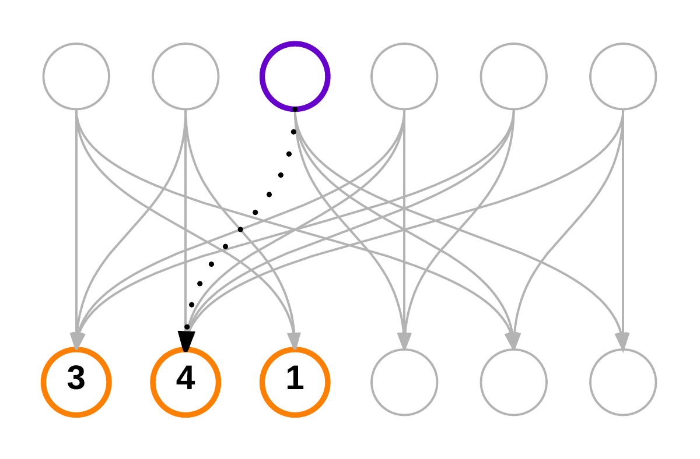
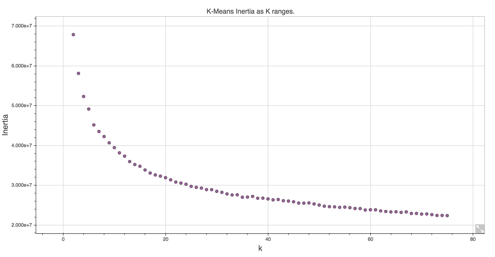
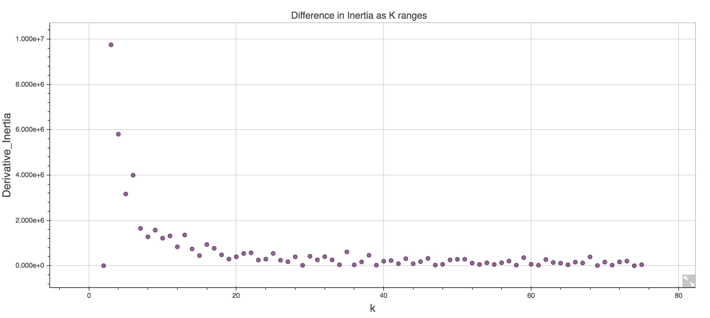

layout: true class: slide <img src="pd-logo.png" class="pd-logo"> --- # Graphs vs Tables ### First Half: 12:50 - 1:35 (ish) #### Intro to the debate #### Similarity from graph traversals #### Demo ### Second Half: 1:45 - 2:30 (ish) #### Similarity from tables #### Demo #### Discussion --- class: center,middle # Graphs vs Tables: # Ready? Fight. ### Lessons learned from building similarity models from structured healthcare data in both graph and relational dbs #### Denise Gosnell, PhD #### Data Scientist, PokitDok --- class: left, middle # False Dichotomy: ### A situation that is not jointly exhaustive ### or that is not mutually exclusive ### or that is possibly neither. --- class: center, middle ### If you're not with us, you're against us. --- class: center, middle ### Graphs vs. Tables --- class: center, middle # /about/pokitdok -- class: center, middle ### The Operating System For The Business Of Health --- ### Obligatory map of API usage .center[] --- # X12 Eligibility request ```html HL*1**20*1~NM1*PR*2*Premium Gold Insurance Co.*****PI*0123456~HL*2*1*21*1~NM1*1P* 1*Back*Has*Your***XX*9876543210~HL*3*2*22*0~TRN*1*89368DC6A14E4E529AA876ED416E8A9F *1453915417~NM1*IL*1*A-lot*Lifts****MI*MEM10001~DMG*D8*19820315*M~EQ*98^33~ ``` #### (the spec for this one request is 552 pages) --- # Our Eligibility request ```javascript { "member": { "birth_date": "1982-03-15", "first_name": "Lifts", "last_name": "A-Lot", "id": "MEM10001" }, "provider": { "first_name": "Has-Your", "last_name": "Back", "npi": "9876543210" }, "service_types": ["professional_physician_visit_office", "chiropractic"], "trading_partner_id": "premium_gold_insurance" } ``` --- # X12 Eligibility response ```html HL*1**20*1~NM1*PR*2*Premium Gold Insurance Co.*****PI*0123456~HL*2*1*21*1~NM1*1P* 1*Back*Has*Your***XX*9876543210~HL*3*2*22*0~TRN*2*89368DC6A14E4E529AA876ED416E8A9F* 1453915417NM1*IL*1*A-lot*Lifts****MI*MEM10001~N3*2150 Pleasant Drive~N4*Sunny*CA* 900010001~DMG*D8*19820315*M~DTP*291*D8*20141001~EB*B**98****10~EB*A**33*****.20~ ``` ### oh God make it stop --- # Our Eligibility response ```javascript { "coverage": [ "coinsurance": [ { "benefit_percent": 0.2, "service_types": [ "chiropractic" ] } ], "copay": { "copayment": { "amount": "10", "currency": "USD" }, "service_types": [ "professional_physician_visit_office" ] } ], "plan_begin_date": "2014-10-01", (...and so on...) } ``` --- class: center, middle # Enter the data storage debate: ### relational? graph? document store...? --- class: center, middle #Problem 1: ### How do we identify and recommend similar doctors within our data? -- class: center, middle ### Enter graphs. --- class: center # Graph DB Schema .center[] --- background-image: url(providers_100k_v1_small.jpeg) ### PokitDok Top 100K Providers --- class: center, middle #Problem 1: ### How do we identify and recommend similar doctors within our data? --- class: center, middle #Sub Problem: ### How do we identify similar doctors? --- class: center, top # Triangular Closure .center[] --- class: center, top # Triangular Closure .center[] --- class: center, top # Triangular Closure .center[] $$pr( E(v_d|v_c) ) = \frac{|(v_d, v_t, v_c)|}{|E(v_t, v_c)|} $$ --- class: left, top # OLAP Traversals .center[] --- class: left, top # OLAP Traversals .center[<img src="doc_sim_0.png" class="med-img" alt="Graph Similarity">] ```python g.V.has("id", id) ``` --- class: left, top # OLAP Traversals .center[<img src="doc_sim1_5.png" class="med-img" alt="Graph Similarity">] ```python g.V.has("id", id).in() ``` --- class: left, top # OLAP Traversals .center[] ```python g.V.has("id", id).in().out() ``` --- class: left, top # OLAP Traversals .center[] ```python g.V.has("id", id).in().out().filter{it.id != id} ``` --- class: left, top # OLAP Traversals .center[<img src="doc_sim3.png" class="med-img" alt="Graph Similarity">] ```groovy g.V.has("id", id).in().out().filter{it.id !=id}.groupCount(m) ``` --- class: left, top # OLAP Traversals .center[<img src="doc_sim3.png" class="med-img" alt="Graph Similarity">] ```groovy g.V.has("id", id).in().out().filter{it.id !=id}.groupCount(m) sort{a,b -> b.value <=> a.value}[0..10] ``` --- class: center, top #Sub Problem: ### How do we recommend similar doctors within our data? --- class: left, top ### OLAP for recommendation .center[] --- class: left, top ### OLAP for recommendation .center[<img src="bipartieGraphSim_2.png" class="med-img" alt="Graph Similarity">] ```python g.V.has("id",id).out("viewed") ``` --- class: left, top ### OLAP for recommendation .center[] ```python g.V.has("id",id).out("viewed") .in("scheduled_with").filter{it.id != id} ``` --- class: left, top ### OLAP for recommendation .center[<img src="bipartieGraphSim_4.png" class="med-img" alt="Graph Similarity">] ```python g.V.has("id",id).out("viewed") .in("scheduled_with").filter{it.id != id} ``` --- class: left, top ### OLAP for recommendation .center[<img src="bipartieGraphSim_5.png" class="med-img" alt="Graph Similarity">] ```python g.V.has("id",id).out("viewed") .in("scheduled_with").filter{it.id != id} .out("viewed") ``` --- class: left, top ### OLAP for recommendation .center[<img src="bipartieGraphSim_6.png" class="med-img" alt="Graph Similarity">] ```python g.V.has("id",id).out("viewed") .in("scheduled_with").filter{it.id != id} .out("viewed") .groupCount(m) ``` --- class: left, top ### OLAP for recommendation .center[] ```python g.V.has("id",id).out("viewed") .in("scheduled_with").filter{it.id != id} .out("viewed") .groupCount(m) sort{a,b -> b.value <=> a.value}[0..2] ``` --- class: center, middle ## [Demo](https://github.com/pokitdok/gremlin-python) --- class: center, middle #Problem 2: ### How do we identify similar entities within our data? -- class: center, middle ### Enter Tables. --- # Our Eligibility response ```javascript { "coverage": [ "coinsurance": [ { "benefit_percent": 0.2, "service_types": [ "chiropractic" ] } ], "copay": { "copayment": { "amount": "10", "currency": "USD" }, "service_types": [ "professional_physician_visit_office" ] } ], "plan_begin_date": "2014-10-01", (...and so on...) } ``` --- # Our Eligibility response ### JSON to tables? ``` | member_id | npi | date | coverage_amount | ... event_1 | abc | 123 | 2016 01 01 | 100 | ... event_2 | def | 123 | 2016 01 01 | 75 | ... event_3 | abc | 456 | 2016 01 02 | 100 | ... event_4 | def | 456 | 2016 01 02 | 75 | ... event_5 | abc | 789 | 2016 01 03 | 300 | ... event_6 | def | 789 | 2016 01 03 | 200 | ... ... ... ... ... ... ... event_n | abc | 123 | 2016 01 08 | 100 | ... ``` --- # What we really want: matrices -- ``` | member_id.abc | member_id.def | npi.123 | npi.456 | npi.789 | ... event_1 | 1 | 0 | 1 | 0 | 0 | ... event_2 | 0 | 1 | 1 | 0 | 0 | ... event_3 | 1 | 0 | 0 | 1 | 0 | ... event_4 | 0 | 1 | 0 | 1 | 0 | ... event_5 | 1 | 0 | 0 | 0 | 1 | ... event_6 | 0 | 1 | 0 | 0 | 1 | ... ... ... ... ... ... ... event_n | 1 | 0 | 1 | 0 | 0 | ... ``` --- # JSON to Matrix ```python def key_extract_recursive(input_data, list_of_keys, ignore_keys=[], parent_key=None, key_separator="."): """ >>> key_extract_recursive({ "b": 1}, [], [], "a") ['a.b.1'] >>> key_extract_recursive({}, [], [], "a" ) [] >>> key_extract_recursive({'b': 1 }, [], [] ) ['b.1'] >>> key_extract_recursive({'b': {'c': 1 }}, [], ["c"], "a" ) [] >>> key_extract_recursive({ 'a': {'b': [{'c': 1 }, {'c':1}]}}, [], []) ['a.b.c.1', 'a.b.c.1'] >>> key_extract_recursive({'b': 1, 'a': {'c': 'd'} } ) ['b.1', 'a.c.d'] """ ``` --- # JSON to Matrix ```python def key_extract_recursive(input_data, list_of_keys, ignore_keys=[], parent_key=None, key_separator="."): if input_data: if type(input_data) is dict: for key, value in input_data.iteritems(): if not key in ignore_keys: key = '_'.join(key.split()).upper() next_key = key if parent_key: next_key = parent_key + key_separator + key list_of_keys = key_extract_recursive(value, list_of_keys, ignore_keys, next_key) elif type(input_data) is list: for item in input_data: list_of_keys = key_extract_recursive(item, list_of_keys, ignore_keys, parent_key) else: input_data = '_'.join(str(input_data).split()).upper() terminal_value = input_data if parent_key: terminal_value = parent_key + key_separator + input_data list_of_keys.append(terminal_value) return list_of_keys ``` --- # JSON to Matrix ```python from sklearn.feature_extraction import DictVectorizer import json def jsonl_to_binary_matrix(input_file): data = [] with open(file_name, 'r') as read_file: for line in read_file: line_data = json.loads(line) file_grammar = key_extract_recursive(line_data, [], IGNORE_KEYS) file_dict = {key: 1 for key in file_grammar} data.append(file_dict) vector_maker = DictVectorizer(dtype=np.float32) data = vector_maker.fit_transform(data) ``` --- # From matrix to ... ### You want to do some reductions? #### PCA, SVD, NMF ... go crazy. ### You say similarity? Ready for that too. #### Entity Co-occurence, K-means clustering, LDA -- ``` (•_•) ( •_•)>⌐■-■ (⌐■_■) ``` --- class: left, top # Co-occurrence Analysis .center[<img src="Co-Occurance.jpg" class="small-img" alt="Graph Similarity">] ```python import numpy as np import seaborn as sns import pandas as pd co_occurance_matrix = np.dot(data, data.transpose()) co_occurance_df = pd.DataFrame(data=co_occurance[0:,0:]) sns.set() sns.heatmap(co_occurance_df, annot=True, fmt="d", linewidths=.5) ``` --- class: center, middle # Dimensionality Reduction and K-Means Visualization ## DEMO --- class: center, middle .center[] # Kmeans Analysis --- class: center, middle .center[] # Kmeans Analysis --- # Visualizing Clusters .center[<img src="CirclePacking.png" class="big-img" alt="Graph Similarity">] --- # Graphs v. Tables ### did we decide anything? --- # Graphs v. Tables ### What problem are you trying to solve? ### Does it need a database? ### Scalability? Run Time? Dev Time? ### Relationships vs verbose properties? --- class: left, top ### Graphs: great for relationships .center[] ```python g.V.has("id",id).out("viewed") .in("scheduled_with").filter{it.id != id} .out("viewed") .groupCount(m) sort{a,b -> b.value <=> a.value}[0..2] ``` --- class: left, top ### Tables: great for exploiting verbosity .center[<img src="Co-Occurance.jpg" class="small-img" alt="Graph Similarity">] ```python import numpy as np import seaborn as sns import pandas as pd co_occurance_matrix = np.dot(data, data.transpose()) co_occurance_df = pd.DataFrame(data=co_occurance[0:,0:]) sns.set() sns.heatmap(co_occurance_df, annot=True, fmt="d", linewidths=.5) ``` --- ### Tables: Similarity .center[<img src="Co-Occurance.jpg" class="big-img" alt="Graph Similarity">] --- background-image: url(SimilarTradingPartners.png) ### Graphs: Similarity --- class: center, middle # graph = table --- class: center,middle # Graphs vs Tables: # Ready? Fight. ### Lessons learned from building similarity models from structured healthcare data in both graph and relational dbs #### Denise Gosnell, PhD #### Data Scientist, PokitDok